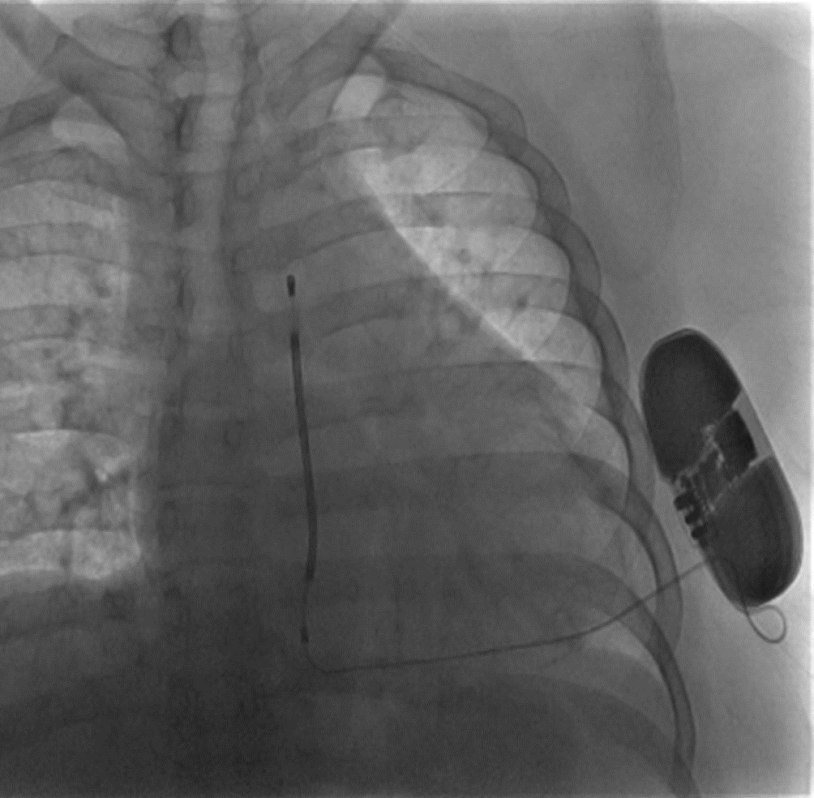

Prospective Randomized Comparison of Subcutaneous and Transvenous Implantable Cardioverter Defibrillator Therapy (PRAETORIAN) trial
The subcutaneous implantable cardioverter–defibrillator (sqICD) was
designed to avoid complications related to the transvenous ICD lead
by using an entirely extrathoracic placement. However, the extrathoracic placement makes it impossible
for the device to deliver pacing therapy.

Example of CXR of a patient with an entirely subcutaneous ICD.
PRAETORIAN trial is the first RCT on sqICD. It is designed as a non-inferiority trial comparing
safety endpoints of sqICD vs. conventional transvenous ICD. The trial enrolled 849 patients with indication
for ICD therapy without the need for pacing therapy.

sqICD was noninferior to the transvenous ICD with respect to device-related complications and inappropriate shocks.